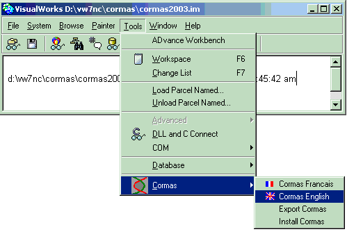
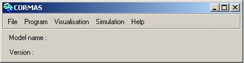

|
Installation complète de Cormas2004
Cette page explique la procédure complète d'installation
de Cormas. Si vous avez déjà installer une version de Cormas
sur VW7, faite une simple mise à jour
de votre version.
La procédure se déroule en 2 temps : il faut installer
VisualWorks, le langage de programmation délivré gratuitement
par Cincom puis Cormas. Malheureusement, il nous est légalement
pas possible de fournir une version tout-en-un comprenant VW et Cormas.
Première étape: installation de VW7
Télécharger VisualWorks 7.4
Tout d'abord, vous devez télécharger la version non-commercial
de VisualWorks 7 sur le site web de Cincom et plus précisément
:
- le fichier correspondant à votre système d'exploitatoin,
par exemple VM-Windows.tar.gz pour Windows (chapitre "VisualWorks
-- Step 1: Virtual Machine")
- le fichier de base : BaseVisualWorks.tar.gz (chapitre "VisualWorks
-- Step 2") et
- des composants additionels (appelés "Add-ons" et
"Goodies"):
- COM Connect (pour Windows)
- DLL & C Connect
- Database Connect
- et Cincom Goodies
Vous trouverez tous ces fichiers ici (légalement, nous ne pouvons
les délivrer nous-mêmes): http://www.cincom.com/scripts/smalltalk.dll//downloads/index.ssp?content=visualworks
Installer et paramètrer VisualWorks 7.4
- Créer un répertoire pour VisualWorks sur votre disque;
par exemple : D:\VW7.4
- Dézipper tous ces fichiers (.tar.gz) dans le répertoire
Disk:\VW7.4\
Seconde étape: installation de Cormas2004
Télécharger Cormas
Tout d'abord, vous devez télécharger le fichier installCormas.zip
(8 Mo), puis le dézipper dans le répertoire Disk:\VW7.4\
( le répertoire «cormas» est créé). Vous
devez alors obtenir l'architecture suivante :
- Disk:\VW7.4\
- bin
- cormas
- Kernel
- Messages
- Models
- DataBase
- goodies
- image
- ...etc...
Lancer VisualWorks
- Aller dans le répertoire cormas (\VW7.4\cormas) et sélectionner
le fichier Cormas2004.im
- « shift - bouton droit » , sélectionner
OUVRIR AVEC
- Associer le fichier Disk:\VW7.4\bin\win\Visual.exe
Ouvrir Cormas
Lorsque VW7 est ouvert, dans le menu du VisualWorks Launcher, sélectionner
:
Tools --> Cormas --> Cormas Francais 
L'interface Cormas s'ouvre :

Si vous souhaitez prendre des photos de la grille ou faire des films,
cette option nécessite d'avoir installer QuickTime.
Il faut également un fichier DLL (JunWinQT.dll)
à sauver dans Disk:\VW7.4\bin\win
Tester vos modéles
Essayer de manipuler le modèle ECEC
en suivant les instructions pas à pas.
Nous vous invitons à essayer les didactitiels
Vous pouvez aussi tester d'autres modèles comme TSE,
PlotsRental, JLB
ou Conway.
Un tableau des bugs et des ajouts
est mis à jour régulièrement.
Forum Cormas
Nous vous invitons également à rejoindre
la liste Cormas@cirad.fr.
|